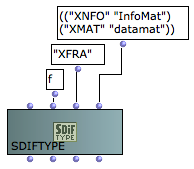
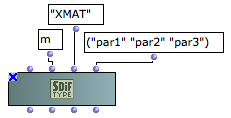

SDIF Classes
OM provides a set of classes used to represent SDIF data. These class basically follow the structure and components of the SDIF format. Thay can be used to inspect or create data to write in SDIF files.
SDIF Matrices
Matrices are the basic data structure in SDIF. They are made of an arbitrary number of elements (columns) and a number of fields (lines) depending on the SDIF types.
The class SDIFMATRIX is a subclass of CLASS-ARRAY. It is initialized and created by specifying a number of components ( <numcols> ) and the values of these components for a number of fields.
The different fields are added like in the CLASS-ARRAY, as keyword inputs.
SDIF matrix has one required specific slot ( <signature> ) corresponding to the SDIF type signature of the matrix.
Sometimes large numbers of SDIF matrices have to be generated and stored by algorithmic processes where the potentialities of the CLASS-ARRAY object become heavy and unnecessary. In this case, the class RAW-SDIFMATRIX may be used instead.
RAW-SDIFMATRIX contains the raw matrix data with no specific storage nor symbolic processing features. It is initialized with a type signature, a number of elements and fields, and a plain list of data corresponding to the matrix contents. This plain data can be written and stored directly on disk when writing the matrix to an SDIF file, which can significantly reduce the overall computation cost.

Note: In the RAW-SDIFMATRIX the data is specified column by column (or element by element) and not field by field as with the SDIFMatrix or CLASS-ARRAY.
The data list for the same example matrix with two identical elements would therefore be (440.0 1 100.0 440.0 1 100.0)
SDIF Frames
An SDIF frame gathers one or several SDIF matrices in a time-stamped data unit.
Frames of different types are identified by a signature, and frames of a given type can be grouped in streams thanks to their stream ID.
SDIFFRAME represents an SDIF frame object in the OM framework.

SDIF frames can be groupped in streams, which can be used to discriminate, for instance, interleaved parallel descriptions in the SDIF file. SDIF streams are not real structural components in the SDIF format though, and are only impliciely created depending on the frames' stream ID The SDIFSTREAM class can be used to group a sequence of frames in a common stream. It is an optional utility which allows in particular to automatically set the correct stream ID to every frames in it. |
An SDIFSTREAM a can also be created from an existing SDIF file using GETSDIFSTREAM. Internal extracted SDIFFrame and SDIFMatrix objects can then be inspected and manipulated in OM patches.
SDIF Types
The class SDIFType allows to create SDIF type declatations to be embedded in SDIF files.
All non-standard frame and matrix types used in a file MUST be declared in this file beforehand.
The second input of the SDIFTyep box (<struct>)allows to select between Frame or Matrix type. |  |
Frame types (<struct> = 'f) are initialized with a four ACSCII characters <signature> and a <description> list. The description list is a list of lists of strings indicating the contained matrix type signatures and description label pairs. |  Frame type declaration : the frame type "XFRA" contains matrices of types "XNFO" (labelled "InfoMat") and "XMAT" (labelled "datamat"). |
Matrix types (<struct> = 'm) are also initialized with a four ACSCII characters signature and a description list. The description list is of strings indicating the matrix field names. |  MAtrix type declaration : the matrix type "XMAT" contains 3 fields labelled "par1", "par2" and "par3". |
Name/Value Tables
Name/Value Tables (or NVT s) are global information stored in the SDIF file header.
They are represented in OM by the class SDIFNVT.
An SDIFNVT is initialized with a list of name/value pairs, a table name and a table ID (optional). |  |